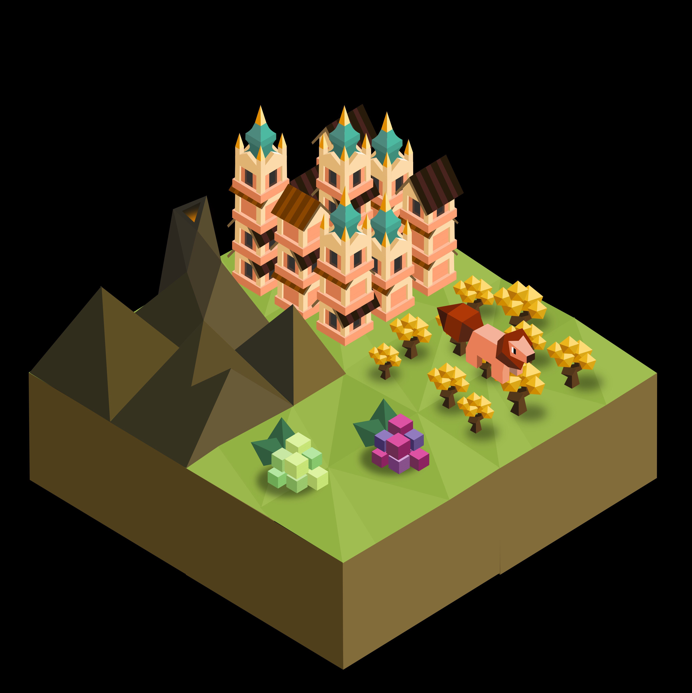
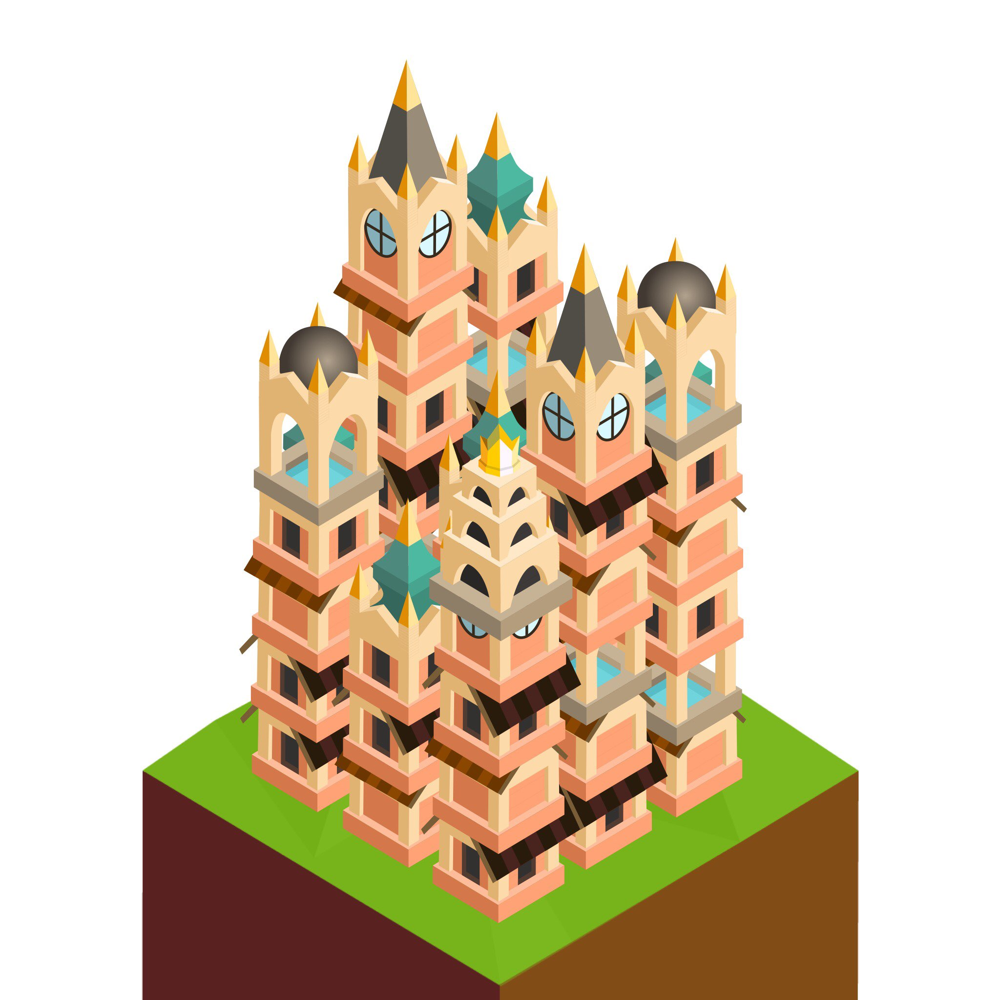

The Tūrzu
Author: Grass#4931
The Tūrzu are a tribe of wise, easy-going folk with a strong connection to the energies of their homeland, their ancestors appeased and befriended the spirits that control the geothermal energies beneath them.
The Tūrzu start with the unique ‘immolation’ tech, and can give their troops blessings to boost their combat abilities.
Techs
Imolation replaces Free Spirit
- allows building the Plains Temple instead of normal Temples
- unlocks the Immolate action instead of Disband
- unlocks the Blessing action
Chivalry
- also unlocks the Eruption action
Rejuvenation replaces Meditation
- allows building Bathhouses
- unlocks the Ignite task instead of Pacifist
Vulcanology replaces Philosophy
- allows training the Guru instead of Mind Bender
Units
| replaces | name | cost | health | attack | defence | range | movement | skills |
|---|---|---|---|---|---|---|---|---|
| Mind Bender | Guru | 5 | 15 | 2.5 | 1 | 2 | 1 | Dash, Burning Heart, Ignite, Auto-immolate |
| Giant | Hearth Champion | N/A | 40 | 4 | 1 | 1 | 1 | Hearth, Burning Heart, Auto-immolate |
| - | Hearth Spirit | 5 | 25 | 3 | 3 | 1 | 2 | Dash, Burning Heart, Fortify, Auto-immolate |
All veterans have the Burning Heart and Auto-immolate skills.
Skills
Burning Heart
- heal 1 hp to every unit around this unit whenever the unit heals itself
Auto-immolate
- immolate automatically upon death.
Ignite
- give an allied unit an opportunity to immolate even if they have already moved that turn
Hearth
- target and heal a single unit for 8 hp
- can be used after moving even though they do not have the dash skill
Unit Actions
Immolate
- when a unit immolates they have an opportunity to deal damage to a single unit
- damage dealt is equal to damage at max health multiplied by flame bonuses
- they are destroyed immediately afterwards
- if a unit immolates but takes no action afterwards they disband next turn and return stars like normal
- they do not return any stars if they act on the turn they immolate
Blessing
- for 2 stars you can bring a unit 1 step closer to becoming a veteran
- may only be done once per unit
- for 5 stars, you can upgrade a veteran to a Hearth Spirit
Tile Actions
Eruption
- costs 5 stars
- can only be done on mountains
- causes mountain to erupt, turning all forests and empty fields around the mountain into farmland
Buildings
Bathhouse
- costs 5 stars to build
- must be built next to a mountain
- you can have no more than one bathhouse in every city
- provides 2 population
- heals 2 hp to every unit within a 3x3 area
- whenever a unit gets healed or promoted during your turn, every bathhouse will level up
- at the end of your turn every bathhouse produces stars equal to their level divided by 4
- bathhouses reset to level 0 at the start of your turn
Tiles
The Four Flames
If the Tūrzu appear in a game 4 flames will spawn on random tiles on the map, but they will each be within their own quadrant of that map so they won’t spawn close to each other. There will be one flame for each terrain type, one on a mountain, one on a field, one in a forest, and one in the ocean. The Tūrzu can capture them, and once captured they will each increase the attack power of immolation by +0.20x and produce 1 star per turn (maximum of 12) for every bathhouse you have built.
For further clarification: without any flames immolation will deal the same damage a troop would normally deal at max health, but with each flame it increases as so:
1 flame: 1.2x damage
2 flames: 1.4x damage
3 flames: 1.6x damage
4 flames: 1.8x damage
Tasks
Ignite
- replaces the pacifist task
- to complete it you must find and capture all 4 flames
Spawn Rates
Increased forests, fruit and metal. Force spawns a mountain next to every village in their territory if the map generation doesn’t provide one.
Images

